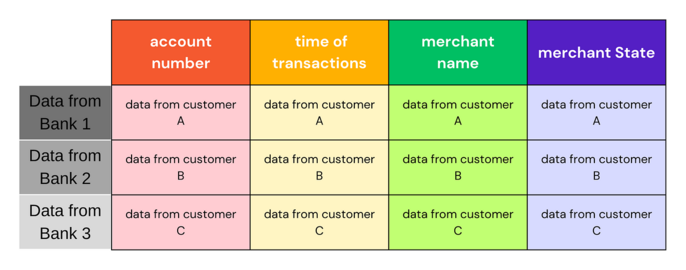
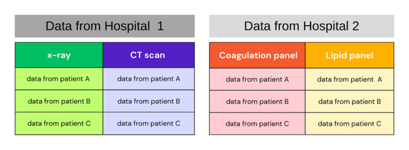

Federated Learning (FL) is a machine-learning setting that can let different entities cooperate to create a powerful shared model without having to share their private data. Let's look at an example of a federated learning system and why would you build one: Let's you are a lovely company/bank/hospital, and you got some amount of data but you want your model to see more data and different patterns of data hoping that this can make your model perform better and be less biased.
so you go for another company/bank/hospital and you ask to show their data to your model, promising them that you're not some evil witch, but even though you're a respectful entity, they still can't show their data to your model for so many reasons.
So what to do 🤔
well, some say that in this particular case, FL would be a very good solution.
In simple terms this is how federated learning would be done in this case:
Ingredients:
- - Nice server: we can call it a federated server.
- - Aggregation algorithm.
- - A global model with some random starting weights.
Steps:
- 1- federated server sends a global model to each entity.
- 2- each entity trains the global model on its data, extracts the model's new weights and sends those weights to the federated server.
- 3- the federated server uses the aggregation algorithm to aggregate the weights that it got from each entity - can simply just take their mean- and assign the resulted weight to the global model and send it back to the entities.
- 4- repeat 🔁 2,3 until you get a nice convergence.
And bam, now you got a powerful model that can benefit your company/bank/hospital and benefit others, that model is less biased, and more powerful than the model that you could build on your limited data.

There are a lot of flavors for federated learning, and the one that we talked about in the example above is called cross-silo horizontal federated learning. The steps and ingredients that we talked about above could be slightly modified to be used in horizontal cross-device settings.
Federated learning Systems can be categorized in so many ways:
1- Based on Data partitioning:
- Horizontal federated learning:
- In this FL setting, all the clients have the same feature space aka the same column names, but all of them got different samples, an example of that is 2 banks that collect the same kind of features about their clients (account number, time of transactions, merchant name, merchant State,…..) and each of them got different customers.
- Most of the available work in the federated learning literature is done on Horizontal FL.
- 
-Vertical federated learning:
- In this FL setting, all the clients have the same samples but different feature spaces aka different column names, an example of that can be 2 hospitals, both of those hospitals got data on the same group of patients, but that data differs in its nature, hospital 1 got the results for the x-ray and CT scan
- 
-Transfer federated learning:
- A mix of the horizontal settings and the vertical settings.
An Example where such a setting could be needed is cancer diagnosis system.
A group of hospitals wants to build an FLS (Federated Learning System) for cancer diagnosis but each hospital has different patients as well as different kinds of medical examination. In such a case Transfer Federated learning can be a possible solution.
2- Based on the kind of Machine Learning Models chosen for the client
Every Client that's participating in the federated learning system is definitely seeking to apply state-of-the-art models on their local dataset, and based on this model choice, a lot of things in the FLS will be decided, for example choosing the aggregation function.
Here are some of the models of architecture that have been used in different Federated Learning systems:
- NN Based Models:
- Neural Network (NN) based models are one of the most famous model architectures used in FLS, They achieve very good results in many tasks such as image classification, Fraud detection, word prediction etc……..
There are a lot of aggregation functions that can deal with this kind of architecture, The most famous one is FedAvg.
- Tree Based Models:
- Tree-based models are one of the most famous machine learning models especially when it comes to dealing with tabular datasets. They're computationally power-friendly and easy to interpret compared with NN-based models.
There are multiple tree-based models that've been explored in the FL world including Decision Trees, Random Forests, gradient-boosting decision trees (GBDT), XGBoost etc…..
- Linear Models:
- Classic linear models (including linear regression, logistic regression, SVM,…..) are famous models that are usually used a lot because they are very easy to understand.
Note: Most of the currently available FL frameworks are built to deal with stochastic gradient descent which is a classic optimization algorithm that's used to train NN-based models, logistic regression, etc…..
3- Based on Privacy Mechanisms:
One of the most important things when it comes to building an FLS is to make sure that the data of each client is safe and private.
You may think that given that the clients' data aren't exposed to the server they are safe and private.
But in reality, the exchanged model parameter between the server and the clients can expose sensitive information about the clients' data.
There are two main categories for privacy in FLS: global privacy and local privacy.
In Global Privacy we assume the existence of a trust-worthy server, so the updates from each client are sent to the server without any added privacy them, then The server should privatize those updates to keep them safe from any untrusted third party.
In Local Privacy, even the server itself can't see the raw updates.

Building a privacy guarantee algorithm for FLS faces a lot of challenges as this algorithm needs:
- - to be computationally cheap.
- - to be communication-efficient, some algorithms can cause an overhead on the communication process between the clients and server, and such a thing can be a true burden to the FLS.
- - to be tolerant to dropped clients -those who can't communicate to the server in the current round-
not to overly affect the accuracy -or whatever metric you choose for your system- of the system.